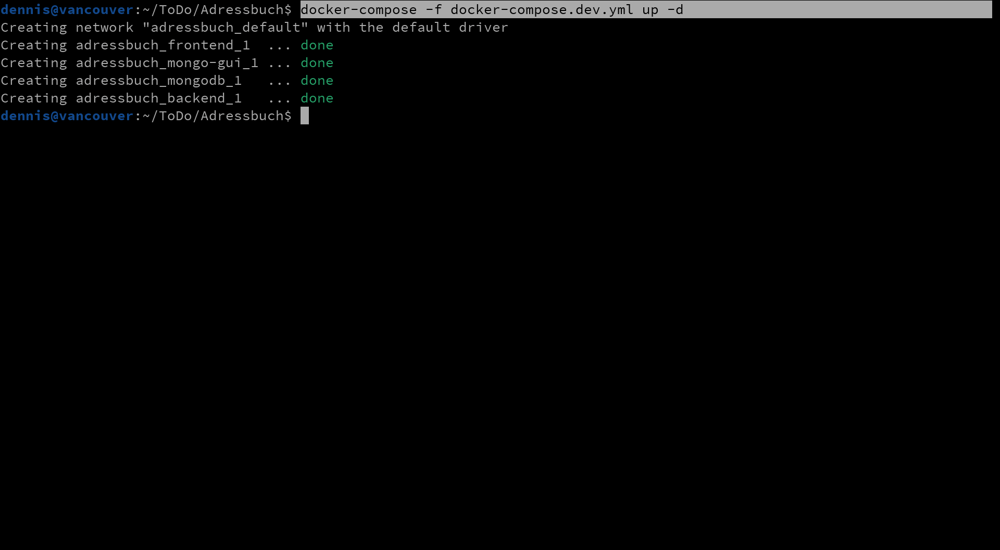
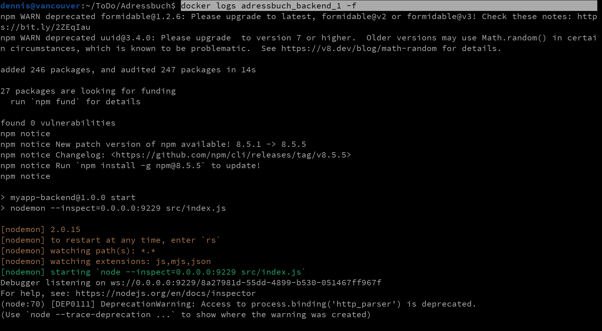
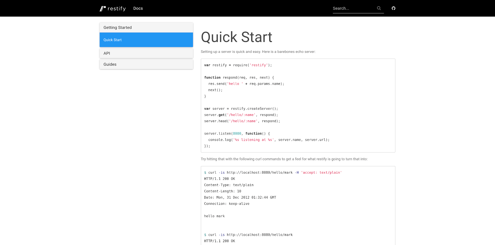
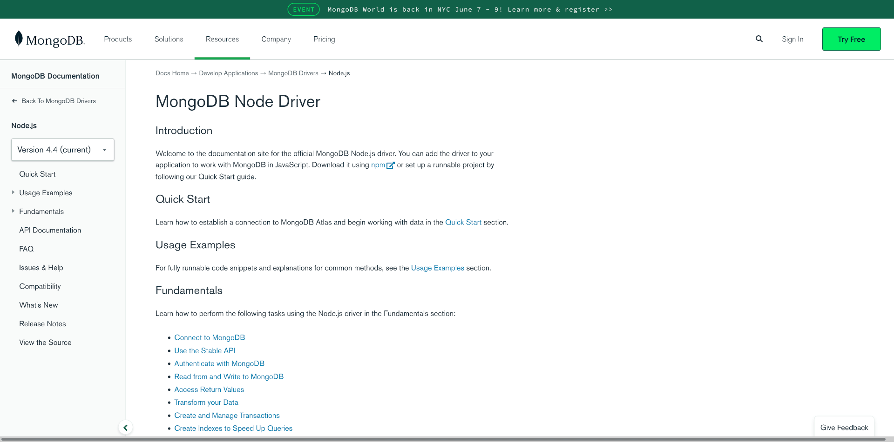
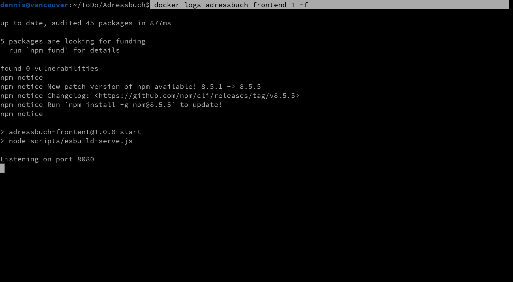
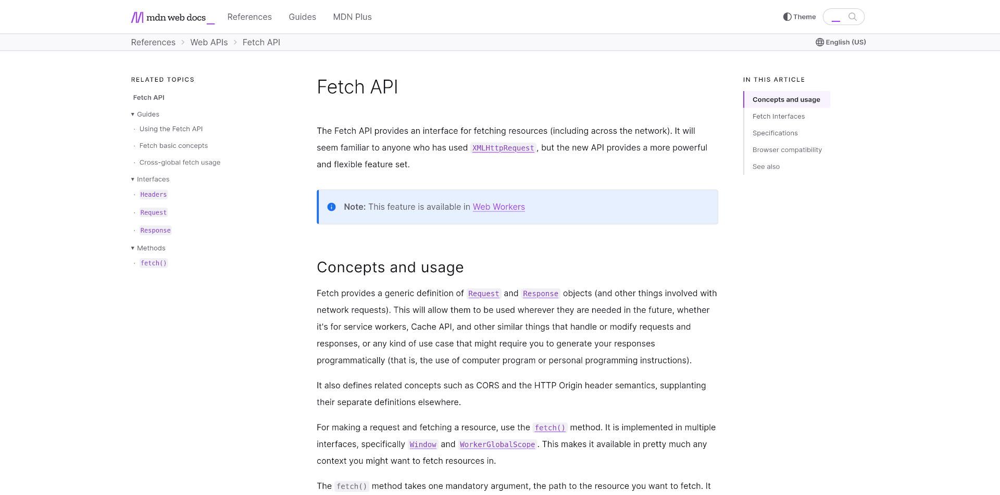

* Definition des Datenmodells
* Definition der URL-Endpunkte
* Definition der HTTP-Nachrichten
* Erstellen der OpenAPI-Spezifikation mit Stoplight
* Grundgerüst der Serveranwendung
* HTTP-Handler und Controller-Klassen
* Service-Klassen für den Datenbankzugriff
* Verwendung der Fetch API im Browser
* Backendaufrufe in der Beispielanwendung
* Hintergründe zu CORS
In diesem Foliensatz soll die Entwicklung des Adressbuch-Beispiels
aus den Quellcodes zur Vorlesung vorgestellt werden. Da das Beispiel
dem **Contract First** Ansatz folgt, muss deshalb zunächst das
Datenmodell des Webservices, bestehend aus den fachlichen Daten
sowie zusätzlichen Schemas zur Umsetzung des HATEOAS-Prinzips,
definiert werden.
Der Webservice verwaltet als einzige Ressource Adressen, welche
die Einträge des Adressbuchs darstellen. Jede Adresse besteht aus
einem Vornamen, Nachnamen, einer E-Mailadresse und Telefonnummer.
Darüber hinaus besitzt sie eine eindeutige ID sowie Verlinkgen
gemäß dem HATEOAS-Prinzip.
Address
Adressbucheintrag
| Feld |
Datentyp |
Beschreibung |
| _links |
HATEOAS_Resource |
HATEOAS-Verlinkungen |
| _id |
String |
Eindeutiger Schlüsselwert |
| first_name |
String |
Vorname |
| last_name |
String |
Nachname |
| phone |
String |
Telefonnummer |
| email |
String |
E-Mailadresse |
{
"_links": {
…
}
"_id": "621ff9a936997df5baba746e",
"first_name": "Fox",
"last_name": "Mulder",
"email": "mulder@xfiles.com",
"phone": "+49 721 553181"
}
Die Startadresse des Webservices soll eine Übersicht mit allen
Collections liefern, wobei zu jeder Collection die URLs, HTTP-Verben
und URL-Parameter zum Durchsuchen der Collections und zur Anlage neuer
Einträge mitgeteilt werden sollen.
HATEOAS_Collection
Beschreibung einer einzelnen Collection
| Feld |
Datentyp |
Beschreibung |
| _name |
String |
Name der Collection |
| query |
HATEOAS_Link |
Link zum Durchsuchen der Collection |
| create |
HATEOAS_Link |
Link zur Anlage neuer Einträge |
HATEOAS_Link
Details zu einem Link
| Feld |
Datentyp |
Beschreibung |
| url |
String |
URL-Pfad relativ zur Startadresse des Webservices |
| method |
String |
Zu verwendende HTTP-Methode (z.B. GET oder POST) |
| query_params |
Array[String] |
Namen aller erlaubten URL-Parameter
Der Einfachheit halber ohne weitere Details,
wie z.B. dem Datentyp der Parameter oder welche Parameter optional sind. Es wird
davon ausgeganen, dass es keine Pflichtparameter gibt und der Aufrufer weiß, in
welchem Format die Werte übergeben werden müssen.
|
[
{
"_name": "address",
"query": {
"url": "/address",
"method": "GET",
"query_params": ["search", "first_name", "last_name", "phone", "email"]
},
"create": {
"url": "/address",
"method": "POST",
}
}
]
Jede Ressource des Webserivces (hier also jeder Adressbucheintrag) soll
darüber hinaus alle notwendigen Informationen liefern, damit ein Client
weiß, wie er die Ressource lesen, ändern und löschen kann.
HATEOAS_Resource
Links zu einer einzelnen Ressource
| Feld |
Datentyp |
Beschreibung |
| read |
HATEOAS_Link |
Link zum Lesen der Ressource |
| update |
HATEOAS_Link |
Link zum Überschreiben der Ressource |
| patch |
HATEOAS_Link |
Link zum Ändern einzelner Felder der Ressource |
| delete |
HATEOAS_Link |
Link zum Löschen der Ressource |
{
"_id": "621ff9a936997df5baba746e",
"first_name": "Fox",
"last_name": "Mulder",
…
"_links": {
"read": {
"url": "/address/621ff9a936997df5baba746e",
"method": "GET",
},
"update": {
"url": "/address/621ff9a936997df5baba746e",
"method": "PUT",
},
"patch": {
"url": "/address/621ff9a936997df5baba746e",
"method": "PATCH",
},
"delete": {
"url": "/address/621ff9a936997df5baba746e",
"method": "DELETE",
},
},
}
Anhand der Schemadefinitionen des Datenmodells können nun die URLs des
Webservices definiert werden. Zu jeder URL müssen dann die erlaubten
HTTP-Verben und zu jedem Verb der Aufbau der HTTP-Anfrage und der
HTTP-Antwort definiert werden.
Die Wurzeladresse des Webservices liefert lediglich eine Übersicht
aller Collections mit ihren wichtigsten URLs als Einstieg für
HATEOAS-fähige Clients.
GET
HATEOAS-Übersicht abrufen
| Statuscode |
Response Body |
| 200 Ok |
Array[HATEOAS_Collection] |
HTTP-Anfrage
GET / HTTP/1.1
Host: example.com
Accept: application/json
HTTP-Antwort
HTTP/1.1 200 Ok
Content-Type: application/json; charset=utf-8
[
{
"_name": "address",
"query": {
"url": "/address",
"method": "GET",
"query_params": ["search", "first_name", "last_name", "phone", "email"]
},
"create": {
"url": "/address",
"method": "POST",
}
}
]
Da es sich hierbei um eine Collection handelt, kann diese mit einer
GET-Anfrage durchsucht oder mit POST zur Anlage
neuer Einträge verwendet werden.
GET
Adressen suchen
| Parameter |
Datentyp |
Beschreibung |
| first_name |
String |
Gesuchter Vorname |
| last_name |
String |
Gesuchter Nachname |
| phone |
String |
Gesuchte Telefonnummer |
| email |
String |
Gesuchte E-Mailadresse |
| Statuscode |
Response Body |
| 200 Ok |
Array[Address] |
HTTP-Anfrage
GET /address?first_name=Fox HTTP/1.1
Host: example.com
Accept: application/json
HTTP-Antwort
HTTP/1.1 200 Ok
Content-Type: application/json; charset=utf-8
[
{
"_links": {
…
}
"_id": "621ff9a936997df5baba746e",
"first_name": "Fox",
"last_name": "Mulder",
"email": "mulder@xfiles.com",
"phone": "+49 721 553181"
}
]
POST
Neue Adresse anlegen
Address
| Statuscode |
Response Body |
| 201 Created |
Array[Address] |
HTTP-Anfrage
POST /address HTTP/1.1
Host: example.com
Accept: application/json
{
"first_name": "Fox",
"last_name": "Mulder",
"email": "mulder@xfiles.com",
"phone": "+49 721 553181"
}
HTTP-Antwort
HTTP/1.1 201 Created
Content-Type: application/json; charset=utf-8
{
"_links": {
…
}
"_id": "621ff9a936997df5baba746e",
"first_name": "Fox",
"last_name": "Mulder",
"email": "mulder@xfiles.com",
"phone": "+49 721 553181"
}
Gemäß den REST-Prinzipien besitzt jeder Adressbucheintrag besitzt eine eindeutige
URL. Über diese kann er gelesen, überschrieben, geändert und gelöscht werden.
GET
Adresse lesen
| Statuscode |
Response Body |
| 200 Ok |
Address |
| 404 Not Found |
– |
HTTP-Anfrage
GET /address/621ff9a936997df5baba746e HTTP/1.1
Host: example.com
Accept: application/json
HTTP-Antwort
HTTP/1.1 200 Ok
Content-Type: application/json; charset=utf-8
{
"_links": {
…
}
"_id": "621ff9a936997df5baba746e",
"first_name": "Fox",
"last_name": "Mulder",
"email": "mulder@xfiles.com",
"phone": "+49 721 553181"
}
PUT
Adresse überschreiben
Address
| Statuscode |
Response Body |
| 200 Ok |
Address |
| 404 Not Found |
– |
HTTP-Anfrage
PUT /address/621ff9a936997df5baba746e HTTP/1.1
Host: example.com
Accept: application/json
{
"first_name": "Fox",
"last_name": "Mulder",
"email": "fox.mulder@xfiles.com",
"phone": "+49 721 553181"
}
HTTP-Antwort
HTTP/1.1 200 Ok
Content-Type: application/json; charset=utf-8
{
"_links": {
…
}
"_id": "621ff9a936997df5baba746e",
"first_name": "Fox",
"last_name": "Mulder",
"email": "fox.mulder@xfiles.com",
"phone": "+49 721 553181"
}
PATCH
Einzelne Felder ändern
Address
| Statuscode |
Response Body |
| 200 Ok |
Address |
| 404 Not Found |
– |
HTTP-Anfrage
PATCH /address/621ff9a936997df5baba746e HTTP/1.1
Host: example.com
Accept: application/json
{
"email": "fox.mulder@xfiles.com",
}
HTTP-Antwort
HTTP/1.1 200 Ok
Content-Type: application/json; charset=utf-8
{
"_links": {
…
}
"_id": "621ff9a936997df5baba746e",
"first_name": "Fox",
"last_name": "Mulder",
"email": "fox.mulder@xfiles.com",
"phone": "+49 721 553181"
}
DELETE
Adresse löschen
| Statuscode |
Response Body |
| 200 Ok |
– |
| 404 Not Found |
– |
HTTP-Anfrage
DELETE /address/621ff9a936997df5baba746e HTTP/1.1
Host: example.com
Accept: application/json
HTTP-Antwort
HTTP/1.1 200 Ok
Content-Type: application/json; charset=utf-8
Für die Backend-Entwicklung benötigen wir eine **Mongo-Datenbank** zum Speichern
der Webservice-Daten sowie eine **Node.js**-Laufzeitumgebung zur Ausführung
des Backend-Quellcodes. Am einfachsten lassen sich diese mit den Docker
Compose Files im Hauptverzeichnis starten. Für die Entwicklung verwenden
wir dabei dei Datei docker-compose.dev.yml, da sie
es uns ermöglicht, unsere Änderungen am Quellcode in Echtzeit auszuprobieren.
* docker-compose -f docker-compose.dev.yml up -d: Starten der Docker-Container
* docker logs adressbuch_backend_1 -f: Konsolenausgaben des Backendservices anzeigen


Serverseitige Webanwendungen und Webservices werden in Node.js/JavaScript
traditionell mit dem Framework [Express](https://expressjs.com/) geschrieben.
Die Programmierung damit ist besonders einfach, allerdings nicht in allen
Punkten optimal auf REST-Webservices abgestimmt. In Anlehnung an Express
haben sich daher eine Vielzahl alternativer Frameworks mit ähnlichem Aufbau
etabliert, von denen wir [Restify](http://restify.com) verwenden.
Zusätzlich benötigten wir natürlich die Online-Dokumentation des MongoDB Node.js-Konnektors
griffbereit.
* [Restify Dokumentation](http://restify.com/docs/home/)
* [MongoDB Node.js-Konnektor](https://www.mongodb.com/docs/drivers/node/current/)


Das Vorlageprojekt teilit sich in drei Hauptbereiche auf: Frontend,
Backend und Gateway-Server. Die Verzeichnisse und Dateien haben dabei
folgende Bedeutung. Bei Klick auf ein Verzeichnis wird unten sein
Inhalt mit einer kurzen Erklärung dargestellt. Die für das Projekt
anzupassenden Verzeichnisse und Dateien sind in der rechten Spalte
hervorgehoben.
Mit Node.js entwickelte, serverseitige Webanwendungen und Webservices nutzen
traditionell den eingebauten Webserver von Node.js mit einem sehr einfachen
Programmiermodell zur Definition von Rückruffunktionen, die bei Eintreffen
bestimmter HTTP-Anfragen aufgerufen werden, um eine Antwort zu generieren.
Bei den meisten „Sinatra-style” Frameworks sieht das Quellcode hierfür
relativ ähnlich aus. Die folgenden Beispiele zeigen daher Schritt für Schritt,
wie sich die index.js des Backend-Services zusammensetzt.
import restify from "restify";
const server = restify.createServer();
server.listen(3000);
Die einfachste Version einer Restify-Serveranwendung besteht aus
gerade mal drei Zeilen. Diese importieren das Hauptobjekt des
Frameworks, erzeugen eine neue Server-Instanz und starten den
Server. Jedoch macht dieser nichts sinnvolles, da hierfür mindestens
noch HTTP-Handler-Funktionen registriert werden müssen.
// Hauptobjekt des Frameworks importieren
import restify from "restify";
// Server-Instanz erzeugen
const server = restify.createServer();
// HTTP-Handler registrieren
server.get("/address", function(req, res, next) {
res.send(200, "Hallo, Welt!");
next();
});
server.post("/address", function(req, res, next)) {
...
}
server.get("/address/:id", function(req, res, next)) {
...
}
// Server starten
server.listen(3000);
Das server-Objekt besitzt für jedes HTTP-Verb eine Methode, mit der
Callback-Funktionen zur Verarbeitung eintreffender HTTP-Anfrange registriert
werden können. Sie erwarten hierfür den URL-Pfad sowie die aufzurufende
Funktion als Parameter. Das Framework prüft daraufhin bei jeder empfangenen
HTTP-Anfrage das Verb und die URL, um die aufzurufenden Handler-Funktionen
zu ermitteln.
Die Handler (die im Falle mehrerer zutreffender Handler immer in der Reihenfolge
ihrer Registrierung durchlaufen werden), bekommen hierfür drei Parameter übergeben:
1. req: Ein Objekt mit den Daten der HTTP-Anfrage
2. res: Ein Objekt zur Generierung der HTTP-Antwort
3. next: Funktion, zur Bestätigung der Verarbeitung
Eine besondere Bedeutung kommt dabei dem Parameter next zu. Es handelt
sich dabei ebenfalls um eine Methode, die explizit aufgerufen werden muss,
die Kontrolle an das Framework zurückzugeben und somit den Aufruf weiterer
Handler-Funktionen sowie das tatsächliche Zurückschicken der Antwort an den
Client zu ermöglichen.
import restify from "restify";
// Auslesen der Umgebungsvariablen zur Konfiguration des Servers
const config = {
port: parseInt(process.env.PORT) || 3000,
host: process.env.HOST || "localhost",
};
// Erzeugen der Server-Instanz
const server = restify.createServer();
// Registrierung der HTTP-Handler
server.get("/", function(req, res, next) {
res.send(200, "Hallo, Welt!");
next();
});
...
// Server starten
server.listen(config.port, config.host, function() {
console.log("Server wurde erfolgreich gestartet.");
console.log("Ausführung mit folgender Konfiguration:");
console.log();
console.log(config);
console.log();
});
In dieser Version wird die Portnummer des Servers nicht hart-codiert
sondern am Anfang des Programms anhand von Umgebungsvariablen zur
Laufzeit ermittelt. Für die lokale Entwicklung werden hier dieselben
Standardwerte wie zuvor vorgegeben. In der Produktion können sie durch
Setzen der Umgebungsvariablen im Betriebssystems jedoch leicht überschrieben
werden.
Außerden wird hier eine weitere Rückruffunktion aufgerufen, sobald der
Server erfolgreich gestartet wurde. Sie gibt eine Statusmeldung auf der
Konsole sowie die verwendeten Konfigurationswerte auf der Konsole aus.
import restify from "restify";
// Auslesen der Umgebungsvariablen zur Konfiguration des Servers
const config = {
port: parseInt(process.env.PORT) || 3000,
host: process.env.HOST || "localhost",
};
// Erzeugen der Server-Instanz
const server = restify.createServer();
// Registrierung eingebauter Middleware-Funktionen für gägngie HTTP-Praktiken
server.use(restify.plugins.acceptParser(server.acceptable));
server.use(restify.plugins.authorizationParser());
server.use(restify.plugins.dateParser());
server.use(restify.plugins.queryParser());
server.use(restify.plugins.jsonp());
server.use(restify.plugins.gzipResponse());
server.use(restify.plugins.bodyParser());
server.use(restify.plugins.throttle({burst: 100, rate: 50, ip: true}));
server.use(restify.plugins.conditionalRequest());
// Registrierung der HTTP-Handler
...
// Server starten
server.listen(config.port, config.host, function() {
console.log("Server wurde erfolgreich gestartet.");
...
});
Ein Vorteil von Restify im Vergleich zu anderen Frameworks ist, dass jeder Aspekt
konfiguriert werden kann. Das Framework macht nichts, was nicht explizit konfiguriert
wurde. Da bestimmte Funktionen wie das Parsen des Request Body oder die Komprimierung
der HTTP-Antwort aber sehr oft benötigt werden, können diese durch „Middleware”-Funktionen
nachgerüstet werden.
Hierfür wird die Methode server.use() verwendet,
um für alle HTTP-Anfragen durchlaufene Callback-Funktionen zu registrieren. Folgende
Features werden dadurch nachgerüstet:
1. acceptParser: Auswertung des Accept Header Fields, um andere
Datenformate außer JSON zu ermöglichen.
1. authorizationParser: Auswertung des Authorization Header Fields,
um personaliserte Anmeldedaten empfangen zu können.
1. dateParser: Auswertung des Date Header Fields und Prüfung,
dass dieses nicht zu sehr von der Uhrzeit des Servers abweicht.
1. queryParser: Auswertung von URL-Parametern, die als Teil der URL an den
Server geschickt werden.
1. jsonp: Unterstützung für den alten JSONP-Standard zum Abruf von Daten.
1. gzipResponse: Komprimierung der Antwort vor ihrem Versand, sofern
dies vom Client unterstützt wird.
1. bodyParser: Parsen verschiedener Datenformate, die als Teil der
HTTP-Anfrage empfangen werden können.
1. throttle: Maximale Anzahl von Verbindungen je IP begrenzen, um somit
der Verwendung des Mail-Servers zum Versand von Span entgegenzuwirken.
1. conditionalRequest: Auswertung des ETag Header Fields,
zur Vermweidung überflüssiger Abrufe unveränderter Daten.
"use strict"
import restify from "restify";
// Auslesen der Umgebungsvariablen zur Konfiguration des Servers
...
// Erzeugen der Server-Instanz
const server = restify.createServer();
// Registrierung eingebauter Middleware-Funktionen für gägngie HTTP-Praktiken
server.use(restify.plugins.acceptParser(server.acceptable));
...
// Protokollzeile für jede HTTP-Anfrage auf der Konsole ausgeben
server.pre((req, res, next) => {
console.log(new Date(), req.method, req.url, `HTTP ${req.httpVersion}`);
return next();
});
// Exceptions ebenfalls auf der Konsole protokollieren, um die betroffene
// Quellcodestelle identifizieren zu können.
server.on("restifyError", function(req, res, err, callback) {
console.error(`${err.stack}\n`);
return callback();
});
// CORS-Header setzen, um Zugriffe von anderen URLs außer der Backend-URL zuzulassen.
// Außerdem OPTIONS-Anfragen (sog. CORS-Preflight) immer mit Status 200 beantworten,
// damit die Browser ändernde Aufrufe tatsächlich durchführen.
server.use((req, res, next) => {
res.header("Access-Control-Allow-Origin", req.header("Origin"));
res.header("Access-Control-Allow-Methods", req.header("Access-Control-Request-Method"));
res.header("Access-Control-Allow-Headers", req.header("Access-Control-Request-Headers"));
res.header("Access-Control-Allow-Credentials", "true");
res.header("Vary", "Origin");
return next();
});
server.opts("*", (req, res, next) => {
res.status(200);
res.send({});
next();
});
// HTTP-Controller registrieren
...
// Server tatsächlich starten
server.listen(config.port, config.host, function() {
console.log("Server wurde erfolgreich gestartet.");
...
});
In dieser Variante werden die speziell in Restify enthaltenen Methoden
server.pre() und
server.on() verwendet,
um für jede HTTP-Anfrage eine Protokollzeile auf der Konsole auszugeben
bzw. nicht abgefangene Exceptions zu protokollieren.
Darüber hinaus werden zwei Handler-Funktionen zur Umgehung typischer
CORS-Restriktionen bei der Entwicklung verteilter Webanwendungen zu
umgehen (Vgl.
Wikipedia).
Da die Generierung von Serveranwendungen mit OpenAPI noch in den Kinderschuhen
steckt, wird die OpenAPI-Spezifikation im Vorlageprojekt hauptsächlich genutzt,
um die HTTP-Anfragen und Antworten zu validieren. Der Quellcode zur Verarbeitung
der Anfrage bleibt jedoch weiterhin komplett selbst entwickelt. Zusätzlich
besteht für Clients die Möglichkeit, die OpenAPI-Spezifikation vom Server abzurufen
sowie dessen Struktur anhand einer einfachen Form des HATEOAS-Prinzips zur
Laufzeit zu ermitteln.
Hierfür können Clients unter der Wurzeladresse des Webservices sowohl die
OpenAPI-Spezifikation hertunerladen als auch eine Auflistung aller „Collections”
mitsamt der erlaubten URLs und HTTP-Verben abrufen. Jede Collection und jede
Ressource beinhaltet darüber hinaus ebenfalls relevante Verlinkungen auf andere
Teile des Webservices.
import restify from "restify";
import OpenApiEnforcer from "openapi-enforcer";
import OpenApiEnforcerMiddleware from "@dschulmeis/restify-openapi-enforcer-middleware";
// Verzeichnisnamen der Quellcodedatei ermitteln
import path from "path";
import { fileURLToPath } from "url";
const __dirname = path.dirname(fileURLToPath(import.meta.url));
// Auslesen der Umgebungsvariablen zur Konfiguration des Servers
...
// Erzeugen der Server-Instanz
...
// Protokollzeile für jede HTTP-Anfrage auf der Konsole ausgeben
...
// Exceptions ebenfalls auf der Konsole protokollieren
...
// CORS-Header setzen
...
// Anfragen und Antworten gegen die OpenAPI-Spezifikation prüfen und dabei
// fehlerhafte Anfragen oder Antworten mit einer Exception ablehnen.
const openApiFile = path.relative("", path.join(__dirname, "api", "openapi.yaml"));
const openApiValidation = await OpenApiEnforcer(openApiFile, {fullResult: true});
const openApiEnforcer = await OpenApiEnforcer(openApiFile, {
hideWarnings: true,
componentOptions: {
production: process.env.NODE_ENV === "production"
},
});
server.use(OpenApiEnforcerMiddleware(openApiEnforcer));
// HTTP-Controller registrieren
...
// Server tatsächlich starten
server.listen(config.port, config.host, function() {
console.log("Server wurde erfolgreich gestartet.");
...
console.log(`OpenAPI-Spezifikation: ${openApiFile}`)
if (openApiValidation.error) {
console.error(`${openApiValidation.error}\n`);
}
if (openApiValidation.warning) {
console.warn(`${openApiValidation.warning}\n`);
}
});
Die Validierung der HTTP-Anfrage nund Antworten erfolgt mit dem Node.js-Modul
openapi-enforcer, das mit npm
als Abhängigkeit zum Vorlageprojekt installiert wird. Denn dieses kann nahezu
alle Inhalte einer OpenAPI-Spezifikation auf ihre Einhaltung prüfen, wofür
lediglich eine kleine, eigene Middleware namens
@dschulmeis/openapi-enforcer-middleware geschrieben
werden musste. Die Middleware fängt alle Anfragen und Antworten ab, wandelt
sie in das von openapi-enforcer erwartete Format um
und wirft eine Exception, wenn eine Abweichung erkannt wurde.
Hierfür muss der Inhalt der OpenAPI-Datei beim Start des Servers eingelesen
und an das Node.js-Modul übergeben werden. Da dabei auch die OpenAPI-Spezifikation
selbst überprüft wird, werden die dabei gefundenen Fehler und Warnungen zur Kontrolle
nach dem Start des Servers auf der Konsole ausgegeben.
import restify from "restify";
// OpenAPI-spezifische Importe
...
// Verzeichnisnamen der Quellcodedatei ermitteln
...
// Sonstige Klassen importieren
import RootController from "./controller/root.controller.js";
// Auslesen der Umgebungsvariablen zur Konfiguration des Servers
...
// Erzeugen der Server-Instanz
const server = restify.createServer();
// Protokollzeile für jede HTTP-Anfrage auf der Konsole ausgeben
...
// Exceptions ebenfalls auf der Konsole protokollieren
...
// CORS-Header setzen
...
// Anfragen und Antworten gegen die OpenAPI-Spezifikation prüfen
...
// HTTP-Controller registrieren
new RootController(server, "/", openApiFile);
// Server tatsächlich starten
server.listen(config.port, config.host, function() {
console.log("Server wurde erfolgreich gestartet.");
...
});
Zur Umsetzung des HATEOAS-Prinzips können die Clients des Webservices
unter seiner Wurzeladresse eine Übersicht all seiner „Collections” und
der dazu passenden HTTP-Anfragen abrufen. Zusätzlich kann der Inhalt der
OpenAPI-Datei abgerufen werden. Da das Hauptprogramme an diesem Punkt
aber schon ziemlich lang ist, wurde diese Funktionalität in ein neue
Klasse namens RootController ausgelagert, wobei
das Wort Controller hier andeuten soll, dass sich
die Klassen um die Bearbeitung von HTTP-Anfragen dreht.
"use strict"
import {wrapHandler} from "../utils.js";
import path from "path";
import { readFile } from "fs/promises";
// Konstruktor
export default class RootController {
constructor(server, prefix, openApiFile) {
this._openApiFile = openApiFile;
server.get(prefix, wrapHandler(this, this.index));
server.get(prefix + "/openapi.yaml", wrapHandler(this, this.openApi));
}
// GET /: Abruf einer HATEOAS-Übersicht aller Collections
async index(req, res, next) {
res.sendResult([
{
_name: "address",
query: {url: "/address", method: "GET", query_params: ["search", "first_name", "last_name", "phone", "email"]},
create: {url: "/address", method: "POST"},
}
]);
next();
}
//
async openApi(req, res, next) {
if (req.query.openapi !== undefined) {
let filecontent = await readFile(this._openApiFile);
res.status(200);
res.header("content-type", "application/openapi+yaml");
res.sendRaw(filecontent);
} else {
res.send();
}
next();
}
}
... TODO ...
// Import der Klasse zum Zugriff auf die MongoDB
import { MongoClient } from "mongodb";
// Verbindung mit dem Datenbankserver herstellen
let client = new MongoClient("mongodb://localhost:27017");
await this.client.connect();
// Öffnen einer Datenbank (Sammelcontainer für mehrere Collections)
let database = this.client.db("adressbook");
// Zugriff auf eine einzelne Collection ermöglichen (beinhaltet die Daten)
let addresses = this.database.collection("addresses");
// Anzahl der vorhandenen Einträge schätzen
let count = await addresses.estimatedDocumentCount();
// Neue Einträge anlegen
addresses.insertMany([
{
first_name: "Willy",
last_name: "Tanner",
phone: "+49 711 564412",
email: "willy.tanner@alf.com",
},
{
first_name: "Michael",
last_name: "Knight",
phone: "+49 721 554194",
email: "michael@knight-rider.com",
},
]);
// Auslesen eines Eintrags anhand seiner ID
let id = "47110815";
let result = await addresses.findOne({_id: new ObjectId(id)});
// Löschen eines Eintrags anhand seiner ID
let result = this._addresses.deleteOne({_id: new ObjectId(id)});
let count = result.deletedCount;
// Speichern eines neuen Eintrags
let newAddress = {
first_name: address.first_name || "",
last_name: address.last_name || "",
phone: address.phone || "",
email: address.email || "",
};
let result = await this._addresses.insertOne(newAddress);
// Einträge suchen und zurückgeben
let query = {
first_name: "Willy",
};
let cursor = addresses.find(query, {
sort: {
first_name: 1,
last_name: 1,
}
});
let result = cursor.toArray();
// Ändern eines Eintrags
let updateDoc = {
$set: {
first_name: "Willy",
last_name: "Tanner",
},
}
await addresses.updateOne({_id: new ObjectId(id)}, updateDoc);
let newEntry = addresses.findOne({_id: new ObjectId(id)});
Für die Backend-Entwicklung muss einerseits das Backend mit seiner Datenbank
laufen, andererseits benötigen wir hier aber eine weitere **Node.js**-Umgebung,
welche zur Installation der benötigten JavaScript-Bibliotheken und zur Ausführung
des [esbuild](https://esbuild.github.io/) Bundlers benötigt wird. Denn erst duch
den Bundler wird der Quellcode des Frontends mit dem Quellcode der verwendeten
Bibliotheken kombiniert, so dass beide vom Browser geladen werden können. Auch
diese Aufgaben erledigen die Docker Compose Files im Hauptverzeichnis.
* docker-compose -f docker-compose.dev.yml up -d: Starten der Docker-Container
* docker logs adressbuch_frontend_1 -f: Konsolenausgaben des Frontends anzeigen

Bei der Programmierung der Frontend-App helfen uns natürlich die Vorlesungsunterlagen
aus dem dritten Semester weiter, da die Struktur genaue der damals besprochenen Single
Page App entspricht. Hinzu kommt lediglich noch die „Fetch API” des Browsers, mit der
HTTP-Aufrufe aus JavaScript heraus erzeugt werden können.
[MDN: Fetch API](https://developer.mozilla.org/en-US/docs/Web/API/Fetch_API)

#### Kontaktdaten
Dennis Schulmeister-Zimolong
E-Mail: dhbw windows3.de
#### Urheberrecht und Lizenzvereinbarung
© 2022 – 2023 Dennis Schulmeister-Zimolong
https://github.com/DennisSchulmeister/dhbwka-wwi-vertsys-2020-folien

Das Werk __Vorlesung "Verteilte Systeme" im Studiengang Wirtschaftsinformatik an der DHBW Karlsruhe (ab 2022)__
von Dennis Schulmeister-Zimolong ist lizenziert unter
Creative Commons Namensnennung 4.0 International.
Sie dürfen
* **Teilen** — das Material in jedwedem Format oder Medium vervielfältigen
und weiterverbreiten
* **Bearbeiten** — das Material remixen, verändern und darauf aufbauen
und zwar für beliebige Zwecke, sogar kommerziell.
Unter folgenden Bedingungen:
* **Namensnennung** — Sie müssen angemessene Urheber- und Rechteangaben
machen, einen Link zur Lizenz beifügen und angeben, ob Änderungen
vorgenommen wurden. Diese Angaben dürfen in jeder angemessenen Art
und Weise gemacht werden, allerdings nicht so, dass der Eindruck
entsteht, der Lizenzgeber unterstütze gerade dich oder deine Nutzung
besonders.
* **Keine weiteren Einschränkungen** — Sie dürfen keine zusätzlichen Klauseln
oder technische Verfahren einsetzen, die anderen rechtlich irgendetwas
untersagen, was die Lizenz erlaubt.
Es werden keine Garantien gegeben und auch keine Gewähr geleistet.
Die Lizenz verschafft dir möglicherweise nicht alle Erlaubnisse,
die du für die jeweilige Nutzung brauchst. Es können beispielsweise
andere Rechte wie Persönlichkeits- und Datenschutzrechte zu beachten
sein, die deine Nutzung des Materials entsprechend beschränken.